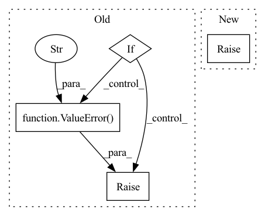

Pattern ID :1882
Before Change
elif self.method == "density":
loss = 1./(torch.exp(torch.mean(vals**2))+1)
elif :
loss = nn.MSELoss()
target = torch.tensor(self.method(pos.detach().numpy()))
return loss(vals,target)
else:
raise ValueError("method must be variance, energy or callable" )
return loss
class OrthoReg(nn.Module):After Change
loss = self.wf.energy(pos)
else:
raise ValueError("method must be variance, energy")
return loss
In pattern: SUPERPATTERN
Frequency: 3
Non-data size: 4
Instances Fragment ID: 7207625
Project Name: nlesc-jcer/qmctorch
Commit Name: 3f224d17a7a179f040a17490a73723d1388f2e09
Time: 2019-08-16
Author: nicolas.gm.renaud@gmail.com
File Name: deepqmc/solver/torch_utils.py
M Class Name: Loss
N Class Name: Loss
M Method Name: forward(2)
N Method Name: forward(3)
M Parent Class: nn.Module
N Parent Class: nn.Module
M File Name: deepqmc/solver/torch_utils.py
N File Name: deepqmc/solver/torch_utils.py
M Start Line: 25
M End Line: 42
N Start Line: 34
N End Line: 34
Before Change
x_tc_out = x_sigmoid
// Temporal Convolution Layer (Tanh)
elif :
x_tanh = self.tanh(x_causal_conv + x_in)
x_tc_out = x_tanh
// Temporal Convolution Layer (ReLU)
elif self.act_func == "relu":
x_relu = self.relu(x_causal_conv + x_in)
x_tc_out = x_relu
// Temporal Convolution Layer (LeakyReLU)
elif self.act_func == "leaky_relu":
x_leaky_relu = self.leaky_relu(x_causal_conv + x_in)
x_tc_out = x_leaky_relu
// Temporal Convolution Layer (ELU)
elif self.act_func == "elu":
x_elu = self.elu(x_causal_conv + x_in)
x_tc_out = x_elu
else:
raise ValueError(f"ERROR: activation function {self.act_func} is not defined." )
return x_tc_out
After Change
x = self.silu(x_causal_conv + x_in)
else:
raise NotImplementedError(f"ERROR: The activation function {self.act_func} is not implemented.")
return x
Fragment ID: 7207624
Project Name: hazdzz/stgcn
Commit Name: de050cc05a36453eafe1bf7bac60401c6561e947
Time: 2022-02-07
Author: raphaelpeo@gmail.com
File Name: model/layers.py
M Class Name: TemporalConvLayer
N Class Name: TemporalConvLayer
M Method Name: forward(2)
N Method Name: forward(2)
M Parent Class: nn.Module
N Parent Class: nn.Module
M File Name: model/layers.py
N File Name: model/layers.py
M Start Line: 93
M End Line: 159
N Start Line: 94
N End Line: 128
Before Change
"If use_lma is specified, q_chunk_size and kv_chunk_size must "
"be provided"
)
if (use_memory_efficient_kernel and use_lma):
raise ValueError(
"Choose one of use_memory_efficient_kernel and use_lma"
)
// [*, H, Q/K, C_hidden]
q, k, v = self._prep_qkv(q_x, kv_x)
After Change
attn_options = [use_memory_efficient_kernel, use_lma, use_flash]
if(sum(attn_options) > 1):
raise ValueError(
"Choose at most one alternative attention algorithm"
)
Fragment ID: 7207627
Project Name: aqlaboratory/openfold
Commit Name: 4f53624d92b28c56c5479c20f262f63b4eaeec68
Time: 2022-07-08
Author: gahdritz@gmail.com
File Name: openfold/model/primitives.py
M Class Name: Attention
N Class Name: Attention
M Method Name: forward(10)
N Method Name: forward(8)
M Parent Class: nn.Module
N Parent Class: nn.Module
M File Name: openfold/model/primitives.py
N File Name: openfold/model/primitives.py
M Start Line: 439
M End Line: 469
N Start Line: 415
N End Line: 486